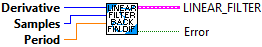
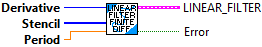
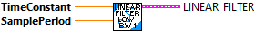

Creates a backward finite difference filter that computes the nth derivative of the input given the specified number of samples.
For example, a first derivative filter that uses two samples and a sample period of 20 ms would be
LinearFilter_BackwardFiniteDifference(
1,
2,
0.02);
For additional information see:
https://en.wikipedia.org/wiki/Finite_difference_coefficient#Arbitrary_stencil_points
For a given list of stencil points s of length n and the order of derivative d < n, the finite difference coefficients can be obtained by solving the following linear system for the vector a.
[s1° ? s?° ][a1] [ d0,d ]
[ ? ? ? ][? ] = d! [ ? ]
[s1n?¹ ? s?n?¹][a?] [d??1,d]
where d?,? are the Kronecker delta. The FIR gains are the elements of the
vector a in reverse order divided by h?.
The order of accuracy of the approximation is of the form O(hn??).
Inputs:
- derivative -- The order of the derivative to compute.
- samples -- The number of samples to use to compute the given derivative. This must be one more than the order of derivative or higher.
- period -- The period in seconds between samples taken by the user.
Outputs:
- LINEAR FILTER - cluster containing:
- InputGains - Array of “feedforward” or FIR gain factors (bx)
- OutputGains - Array of “feedback” or IIR gain factors for feedback terms (ax)
- Inputs - Array of the last n saved inputs
- Outputs - Array of the last n saved outputs
- InGainCount - Number of input gain terms
- OutGainCount - number of output gain terms
- Error -- Returns TRUE if an error occured.
Calculates the next value of the filter. To work correctly this must be called periodically
Inputs:
- inLinearfilter - Linear filter data structure
- input - Current input value.
Outputs:
- outLinearfilter - Updated linear filter data structurea
- output - The filtered value at this step

Calculate the cutoff frequency from the time constant.
Inputs:
- time Constant - seconds
Outputs:
- cutoff Frequency - hertz

This is a LabVIEW "convience" function that combines the various subVI for a linear filter into a single subVI. This subVI creates and executes the linear filter. The filter can be dynamically enabled and disabled. When the filter is disabled, the input is transfered directly to the output. Bumpless transfer is provided when enabling the filter. Bumpless transfer is NOT provided when disabling the filter. The output value jumps directly to the current input value. The filter type and filter constants can also be changed dynamically. When the filter contstants are changed, the output may jump to the current input value when the internal buffers are reset to the current input value.
Inputs:
- FilterType - An enumerated value used to select the type of filter to be cofigured. The possible values are:
- Moving Average - Specify the "sample" input.
- Low pass 1st order Butterworth filter
- Low pass 2nd order Butterworth filter
- High pass 1st order Butterworth filter
- High pass 2nd order Butterworth filter
- Input - Input value to be filtered (Required)
- Enable - Boolean indicating filtering should be performed (Default = True)
- TimeConstant - Filtering time constant seconds. Used for all types except Moving
Average (Default = 0.020)
- SamplePeriod - Execution period seconds. Used for all types except Moving Average.
(Default = 0.020)
- Samples - Number of samples for the moving average filter. (Default = 3)
Outputs:
- OutLinearFilter - Current value of the LinearFilter data structure.
- Output - Current output value.

Computes the factorial of "n". This is an internal function.
Inputs:
- n - Integer value >= 1.
Outputs:
- factorial - The calculated factorial value, as an integer.

Creates a finite difference filter that computes the nth derivative of the input given the specified stencil points.
Stencil points are the indices of the samples to use in the finite difference. 0 is the current sample, -1 is the previous sample, -2 is the sample before that, etc. Don't use positive stencil points (samples from the future) if the LinearFilter will be used for stream-based online filtering.
For additional information see:
https://en.wikipedia.org/wiki/Finite_difference_coefficient#Arbitrary_stencil_points
For a given list of stencil points s of length n and the order of derivative d < n, the finite difference coefficients can be obtained by solving the following linear system for the vector a.
[s1° ? s?° ][a1] [ d0,d ]
[ ? ? ? ][? ] = d! [ ? ]
[s1n?¹ ? s?n?¹][a?] [d??1,d]
where d?,? are the Kronecker delta. The FIR gains are the elements of the
vector a in reverse order divided by h?.
The order of accuracy of the approximation is of the form O(hn??).
Inputs:
- derivative -- The order of the derivative to compute.
- stencil -- Lisst of stencil points. Its length is the number of samples to use to compute the given derivative. This must be one more than the order of the derivative or higher.
- period -- The period in seconds between samples taken by the user.
Outputs:
- LINEAR FILTER - cluster containing:
- InputGains - Array of “feedforward” or FIR gain factors (bx)
- OutputGains - Array of “feedback” or IIR gain factors for feedback terms (ax)
- Inputs - Array of the last n saved inputs
- Outputs - Array of the last n saved outputs
- InGainCount - Number of input gain terms
- OutGainCount - number of output gain terms
- Error -- Returns TRUE if an error occured.

Creates a first-order high-pass filter of the form:
y[n] = gain*x[n] + (-gain)*x[n-1] + gain*y[n-1]
where
gain = e^(-dt / T),
T is the time constant in seconds.
This filter is stable for time constants greater than zero.
Inputs:
- timeConstant The discrete-time time constant in seconds.
- samplePeriod The period in seconds between samples taken by the user.
Outputs:
- Linearfilter - Created datat structure

Creates a 1st order Butterworth high pass filter.
More information on this type of filter can be found at:
https://en.wikipedia.org/wiki/Butterworth_filter
Inputs:
- timeConstant - The discrete-time time constant in seconds.
-samplePeriod - The period in seconds between samples taken by the user.
Outputs:
- Linearfilter - Created datat structure

Creates a 2nd order Butterworth high pass filter.
A 2nd order filter provides more filtering, however it also has a larger phase shift (time delay).
More information on this type of filter can be found at:
https://en.wikipedia.org/wiki/Butterworth_filter
Inputs:
- timeConstant - The discrete-time time constant in seconds.
- samplePeriod - The period in seconds between samples taken by the user.
Outputs:
- Linearfilter - Created datat structure

Creates a 1st order Butterworth low pass filter.
More information on this type of filter can be found at:
https://en.wikipedia.org/wiki/Butterworth_filter
Inputs:
- timeConstant - The discrete-time time constant in seconds.
-samplePeriod - The period in seconds between samples taken by the user.
Outputs:
- LinearFilter - Created datat structure

Creates a 2nd order Butterworth low pass filter.
A 2nd order filter provides more filtering, however it also has a larger phase shift (time delay).
More information on this type of filter can be found at:
https://en.wikipedia.org/wiki/Butterworth_filter
Inputs:
- timeConstant - The discrete-time time constant in seconds.
- samplePeriod - The period in seconds between samples taken by the user.
Outputs:
- Linearfilter - Created datat structure

Creates a K-tap FIR moving average filter of the form:
y[n] = 1/k * (x[k] + x[k-1] + ... + x[0]).
This filter is always stable.
Inputs:
- Samples - The number of samples to average over. Higher = smoother but slower.
The number of samples must be >= 1
Outputs:
- Linearfilter - Created datat structure
- Error -- If TRUE, an error occured.

This VI creates a new data structure (cluster) that stores the data for a set of Vis that implement a linear, digital filter. All types of FIR and IIR filters are supported. A set of VIs are provided to create commonly used types of filters.
Filters are of the form:
y[n] = (b0*x[n] + b1*x[n-1] + ... + bP*x[n-P]) - (a0*y[n-1] + a2*y[n-2] + ... + aQ*y[n-Q])
Where:
y[n] is the output at time "n"
x[n] is the input at time "n"
y[n-1] is the output from the LAST time step ("n-1")
x[n-1] is the input from the LAST time step ("n-1")
b0...bP are the "feedforward" (FIR) gains
a0...aQ are the "feedback" (IIR) gains
IMPORTANT! Note the "-" sign in front of the feedback term! This is a common convention in signal processing.
What can linear filters do? Basically, they can filter, or diminish, the effects of undesirable input frequencies. High frequencies, or rapid changes, can be indicative of sensor noise or be otherwise undesirable. A "low pass" filter smooths out the signal, reducing the impact of these high frequency components. Likewise, a "high pass" filter gets rid of slow-moving signal components, letting you detect large changes more easily.
Example FRC applications of filters:
- Getting rid of noise from an analog sensor input (note: the roboRIO's FPGA can do this faster in hardware)
- Smoothing out joystick input to prevent the wheels from slipping or the robot from tipping
- Smoothing motor commands so that unnecessary strain isn't put on electrical or mechanical components
- If you use clever gains, you can make a PID controller out of this class! (Use the PID set of VI’s instead...)
For more on filters, we highly recommend the following articles:
https://en.wikipedia.org/wiki/Linear_filter
https://en.wikipedia.org/wiki/Iir_filter
https://en.wikipedia.org/wiki/Fir_filter
Note 1: calculate() should be called by the user on a known, regular period. You can use code in a periodic function.
Note 2: For ALL filters, gains are necessarily a function of frequency. If you make a filter that works well for you at, say, 100Hz, (executing every 10 milliseconds ), you will most definitely need to adjust the gains if you then want to run it at 200Hz, (executing every 5 milliseconds)! Combining this with Note 1, the impetus is on YOU as a developer to make sure calculate() gets called at the desired, constant frequency!
Inputs:
- InputGains - Array of “feedforward” or FIR gain factors (bx)
- OutputGains - Array of “feedback” or IIR gain factors for feedback terms (ax)
Outputs:
- LINEAR FILTER - cluster containing:
- InputGains - Array of “feedforward” or FIR gain factors (bx)
- OutputGains - Array of “feedback” or IIR gain factors for feedback terms (ax)
- Inputs - Array of the last n saved inputs
- Outputs - Array of the last n saved outputs
- InGainCount - Number of input gain terms
- OutGainCount - number of output gain terms

Reset the filter state. Sets the saved inputs and outputs to zero.
Inputs:
- inLinearfilter - Linear filter data structure
Outputs:
- outLinearfilter - Updated linear filter data structure

Reset the filter state. Sets the saved inputs and outputs to "InputValue:"
Inputs:
- inLinearfilter - Linear filter data structure
- InputValue - This value is used to fill the saved input and output values
Outputs:
- outLinearfilter - Updated linear filter data structurea

Creates a one-pole IIR low-pass filter of the form:
y[n] = (1-gain)*x[n] + gain*y[n-1]
where
gain = e^(-dt / T),
T is the time constant in seconds.
This filter is stable for time constants greater than zero.
Inputs:
- timeConstant - The discrete-time time constant in seconds.
-samplePeriod - The period in seconds between samples taken by the user.
Outputs:
- Linearfilter - Created datat structure
- Cutoff Frequency - Frequency (Hz)

Calculate the time constant from the cutoff frequency
Inputs:
- cutoff Frequency - hertz
Outputs:
- time Constant - seconds